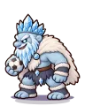

Wiki › Missões › 🏺 Relíquia: Caneleiras do Infinito (1/2)
🏺 Relíquia: Caneleiras do Infinito (1/2)
Nível 630 Relíquia lendária 🌀 Estádio do Multiverso

Quem dá: Mestra Altina, da Torre Infinita
fica em 🌀 Estádio do Multiverso — à direita no mapa (leste)
fica em 🌀 Estádio do Multiverso — à direita no mapa (leste)
A história
Para despertar Caneleiras do Infinito, o Guardião do andar 42 exige uma oferenda: 120x Cristal de Gelo Eterno.
O que fazer
- Junte 120x
 Cristal de Gelo Eterno
Cristal de Gelo Eterno
📍 Onde achar e como chegar
👾Quem:

Gigante de Gelo — Nível 542 (é quem mais deixa cair Cristal de Gelo Eterno)🙋Também: Mestra Altina, da Torre Infinita (troca Fichas da Torre por Baús da Torre — e o baú pode trazer Gelo Eterno)
🗺️Onde: 🎯 Pico do Trovão (🌀 Estádio do Multiverso)
🧭Viagem: 🌀 No Rio de Janeiro, fale com o Guardião do Multiverso.
🧭Caminho: de lá: 🌀 Estádio do Multiverso → ☁️ Picos Nublados → 🎯 Pico do Trovão
📌Lá dentro: embaixo, à esquerda no mapa (sudoeste), perto da placa “🎯 PICO DO TROVÃO”
Recompensas
- ⭐ 163.931.230 XP
- 🪙 22.000.000 tostões
➡️ Depois, libera: 🏺 Relíquia: Caneleiras do Infinito (2/2)